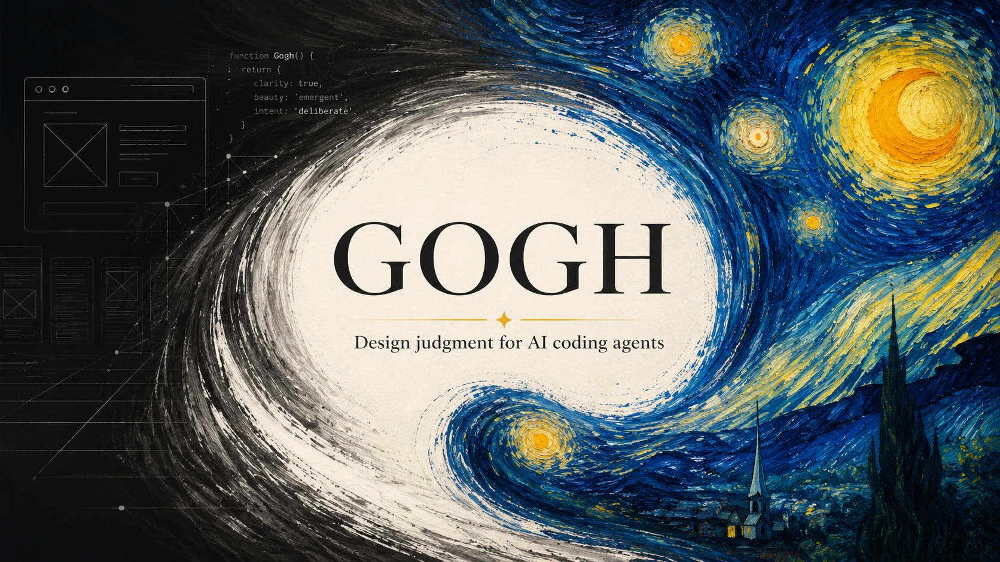

Source-cited Obsidian operating brain that turns six frontend design skills into one advisable stack for AI coding agents. Taste prompting, micro-interaction execution, toolchain enforcement, retrieval, and audit, combined into one anti-slop rulebook.